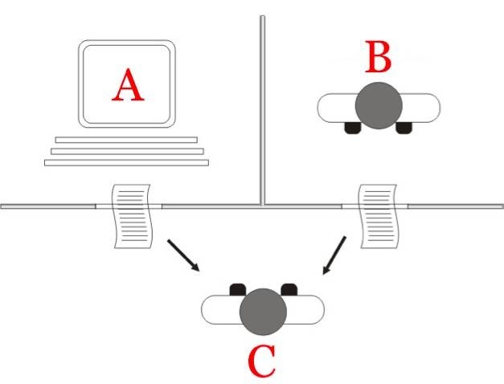
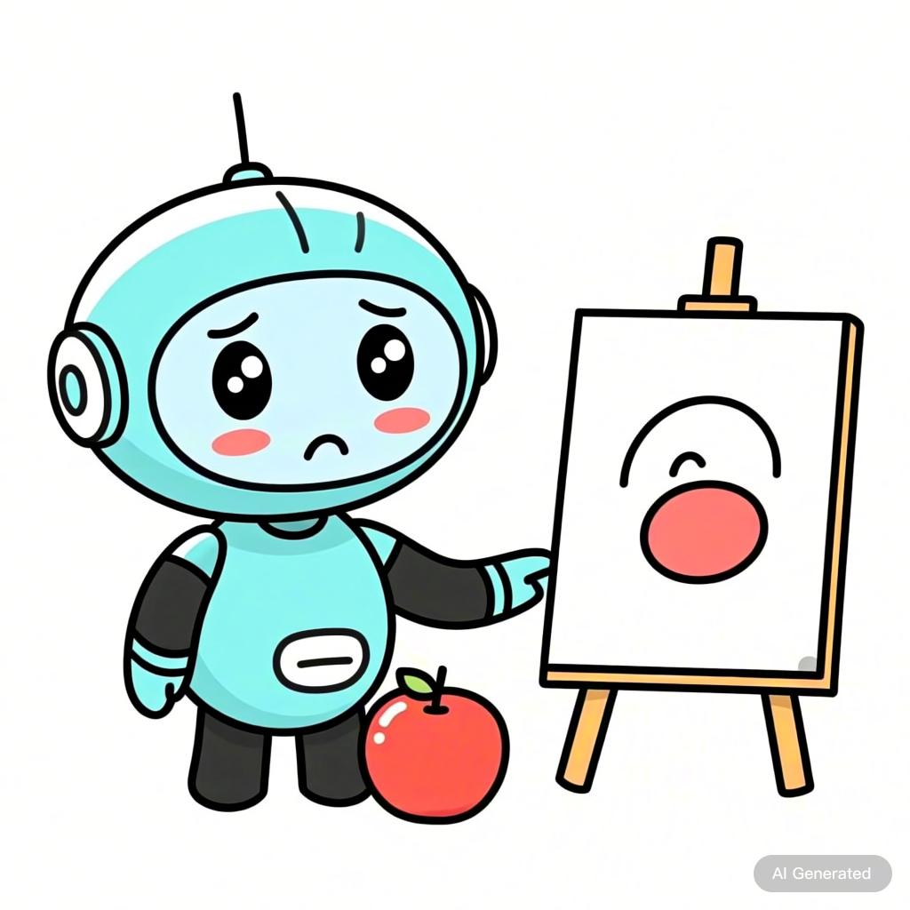
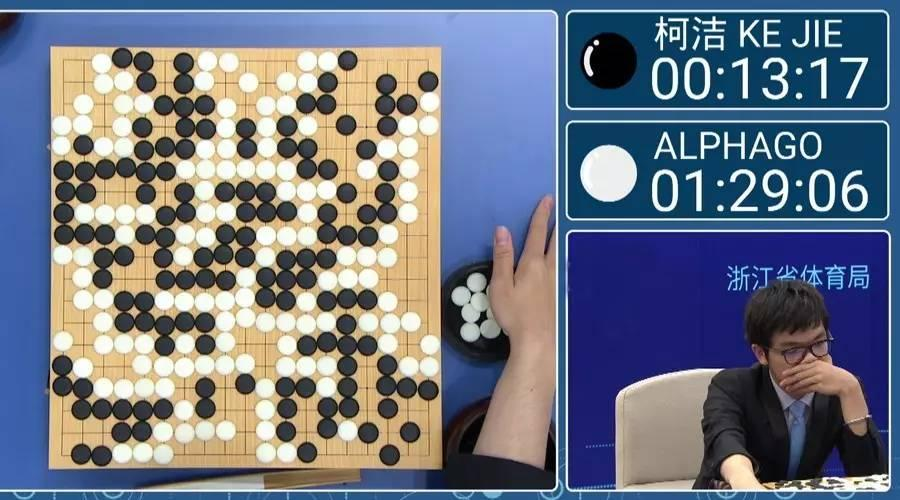

3 - 1 = 2。但是你问 “3
个苹果吃了1个，剩几个？”它就不知道了。| 分类 | 猫猫的特点 |
|---|---|
| 它是动物吗？ | ✔ 是（会动、会吃、会长大） |
| 头的样子 | ◯ 圆脸 ◯ 尖脸 ✔ 有胡须 |
| 毛发 | ✔ 长毛 ✔ 短毛 ◯ 光滑无毛 |
| 尾巴 | ✔ 有尾巴（长/短/蓬松） |
满足以上条件的就是猫吗？
| 分类 | 猫猫的特点 |
|---|---|
| 它是动物吗？ | ✔ 是（会动、会吃、会长大） |
| 头的样子 | ◯ 圆脸 ◯ 尖脸 ✔ 有胡须 |
| 毛发 | ✔ 长毛 ✔ 短毛 ◯ 光滑无毛 |
| 尾巴 | ✔ 有尾巴（长/短/蓬松） |
还有哪些情况会让当时的 AI 判断出错？
| 模型 | 年份 | Top-5错误率（下降幅度） | 创新点 |
|---|---|---|---|
| AlexNet | 2012 | 16.4% （↓10.8%*） | 首个深度CNN，ReLU、Dropout |
| ZFNet | 2013 | 14.8% （↓1.6%） | 改进AlexNet结构 |
| VGG16 | 2014 | 7.3% （↓7.5%） | 小卷积核、更深网络 |
| GoogLeNet | 2014 | 6.7% （↓0.6%） | Inception模块 |
| ResNet-50 | 2015 | 3.57% （↓3.13%） | 残差连接（Residual Block） |
科学家发现：别再让AI死记规则了，让它 “多看图、自己悟”！

你使用过哪些 AI 应用，有什么有趣体验？
机器人是否存在对人类实施攻击行为的潜在风险？
通用人工智能是否具备统治人类社会的可能性？